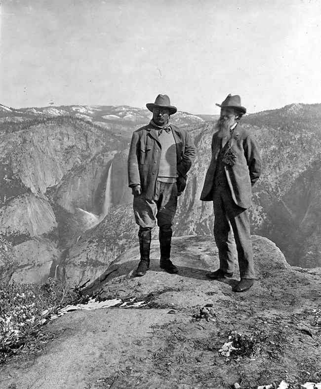

Two Visions of Conservation
By the early 1900s, the conservation movement had quietly fractured into two camps that agreed on almost nothing.6 Preservationists, following John Muir, held that wild landscapes carried intrinsic worth and that the right thing to do was leave them alone. Conservationists, following Gifford Pinchot, took a different view entirely: nature was a resource, and resources were meant to be managed, used, and directed toward the public good.2 Under Theodore Roosevelt, both schools found room to operate, with the federal government expanding its role in land management while also carving out national parks.2 That arrangement worked well enough until Hetch Hetchy came along and forced the two sides into direct conflict.
The practical stakes were not abstract. Pinchot's camp argued that flooding the valley would give San Francisco a dependable water supply and room to grow as a city. Muir's camp saw the valley as something close to sacred ground, and any talk of development as a kind of desecration.7 There was not much middle ground between those positions.
"Dam Hetch Hetchy! As well dam for water-tanks the people's cathedrals and churches..."4
— John Muir, The Yosemite, 1912
